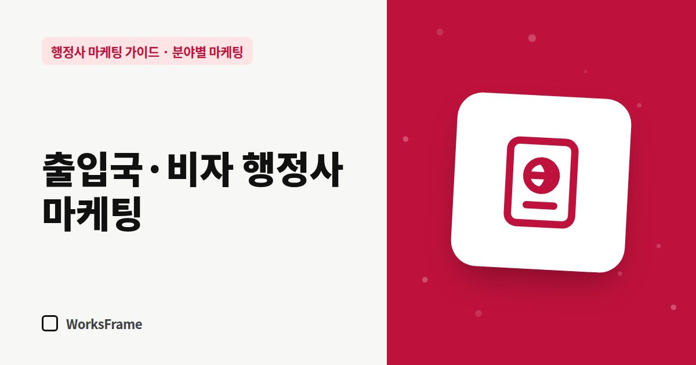

분야별 마케팅
출입국·비자 행정사 마케팅 — 외국인 고객이 찾아오게 하려면
한 줄 답
외국인 본인은 구글·모국어 커뮤니티에서, 고용 사업주는 네이버·소개로 찾습니다. 다국어 안내 페이지, 구글 비즈니스 프로필, 사업주용 업무 안내를 함께 준비하세요.

국내 체류 외국인은 2026년 7월 기준 약 290만 명으로, 인천 인구에 가깝습니다(머니투데이 보도). 출입국·체류 업무를 하는 행정사에게 고객은 크게 두 부류입니다. 외국인 본인과 외국인을 고용한 사업주입니다. 둘은 찾는 곳도, 묻는 말도 다릅니다.
두 고객, 두 가지 경로
| 구분 | 외국인 본인 | 고용 사업주 |
|---|---|---|
| 찾는 곳 | 구글, 구글 지도, 모국어 커뮤니티, 지인 | 네이버, 노무사·세무사 소개 |
| 묻는 말 | “visa extension Korea”, 모국어 검색 | “외국인 근로자 비자 변경”, “E-7-4 전환” |
| 중요한 것 | 내 언어로 설명, 가격, 후기 | 절차 관리, 기한, 서류 부담 |
외국인 본인을 위해
- 다국어 안내 페이지 — 주력 체류 업무 몇 개라도 주요 고객 언어로. 번역은 확인된 한국어 원문을 기준으로 하세요.
- 구글 비즈니스 프로필 — 영어 소개, 상담 가능 언어 (등록 방법)
- 상담 가능 언어는 사실대로 — 통역·번역 도구를 쓰는지도 솔직하게
- 서류 체크리스트를 모국어로 — 저장해서 가져오기 쉽게
고용 사업주를 위해
- 사업주 관점의 업무 안내 — “우리 직원 비자 연장, 회사가 준비할 서류”
- 네이버 플레이스·블로그에 사업주가 검색하는 말로 글 쓰기
- 노무사·세무사와의 협업 (네트워크 관리)
- 여러 명을 한꺼번에 관리하는 기한 관리 서비스를 설명
신뢰를 주는 표시
- 출입국민원 대행기관으로 등록했다면 그 사실을 표시 (표시 방법)
- 대표 행정사 사진·이력, 사무소 주소
- 허가·발급 보장 표현은 쓰지 않기 — 외국인 고객은 과장 광고에 더 취약합니다
개인정보는 한층 조심
여권, 외국인등록증 사본은 고유식별정보입니다. 첫 문의에서 받지 말고, 수임 후 필요한 것만 안전한 방법으로 받으세요.
자주 묻는 질문
어떤 언어부터 만들어야 하나요?
상담 기록에서 가장 많은 고객 국적을 보세요. 처음에는 영어와 가장 많은 고객 언어 하나로 시작하는 것을 권합니다.
기계 번역을 그대로 써도 되나요?
초안으로는 쓸 수 있지만, 중요한 서류명과 기한은 확인이 필요합니다. 원어민 고객에게 한 번 읽어 봐 달라고 부탁하는 것도 방법입니다.